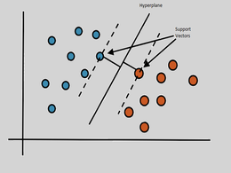
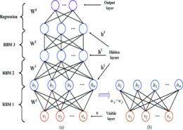

See my work
Here are some things that I like working on.
Machine Learning
I'm experienced in creating prediction and classifiers models, analyzing what features have the biggest impact on the model.
Data Analysis
I'm specialized in analyzing data. I worked on all phases of data analysis, from collecting and cleaning the data to recommending actions based on it.
Cyber Security
I know the main ways of a hacker to realize an attack and I've done research projects in the area of Advanced Persistent Threats(APT).
Visualization
Translating the information into a visual context, such as a map or graph, to make data easier to understand for pulling insights
Web Developing
I'm experienced in creating websites using, or not, templates.
Take a look at my recent works!

Undergraduate Thesis
Aplications of SVMs in detection of Fake-News using Natural Language Processing(NLP).
Universal Internet Of Things
Research project carried out in the University of Brasília.
A Case Study Data Analysis
This case study is from a Google's certification that I'm still working on it.

Machine Learning Techniques in 6G Networks
A study carried out during a postgraduate discipline in Artificial Intelligence at the University of Brasília.
Machine Learning Techniques in 6G Networks
A study carried out during a postgraduate discipline in Artificial Intelligence at the University of Brasília.
My name is Rodrigo Andrade da Silva and I am Undergraduate in Network Engineering at the University of Brasília.
Since I was a child I've always been fascinated by puzzles and riddles,
and through the years this love has evolved into a true passion for solving tough problems.
I think that's one of the main reasons I have such a high regard for coding,
because I see everything as one big puzzle that needs to fit together in order to everything works properly.